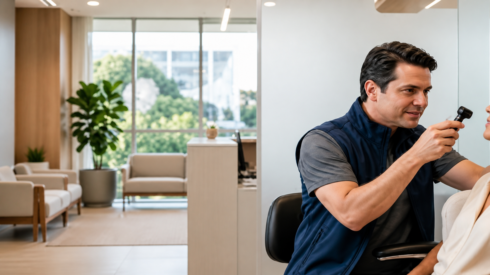
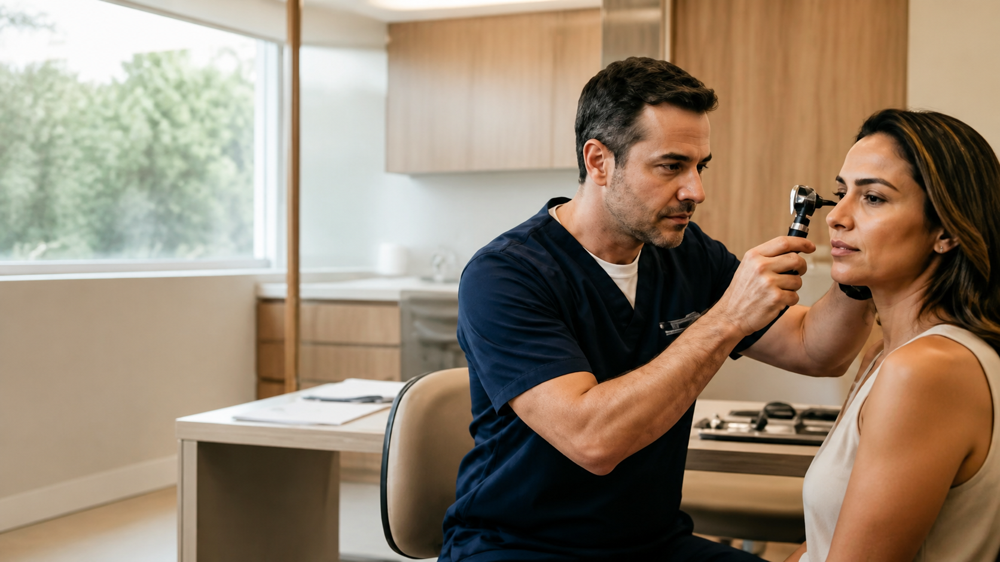

Tontura não é tudo igual.
Vertigem, instabilidade e desequilíbrio podem ter diferentes causas. Uma avaliação ajuda a definir como investigar.
Agendar avaliação ↗Otorrinolaringologia · Ed. Talento · Brasília
Consultas, exames e cirurgias em otorrinolaringologia para adultos e crianças. Fale com a equipe da NEO e organize seu atendimento pelo WhatsApp.
Ed. Talento — SEP/SUL, EQ 714/914 · Asa Sul, Brasília

Comece pelo que você sente
Escolha sua necessidade. O WhatsApp abre com uma mensagem específica para facilitar o atendimento.

Consulta otorrinolaringológica
O especialista considera sintomas e histórico para orientar a investigação, os exames necessários quando indicados e as possibilidades de cuidado.
Buscas frequentes
Vertigem, instabilidade e desequilíbrio podem ter diferentes causas. Uma avaliação ajuda a definir como investigar.
Agendar avaliação ↗Zumbido, ouvido tampado ou dificuldade para compreender conversas são motivos para buscar avaliação.
Agendar avaliação ↗Cuidado integrado
A página oficial da NEO divulga atendimento em otorrinolaringologia e fonoaudiologia. A indicação de cada etapa depende da avaliação do paciente.
Avaliação clínica para sintomas de ouvido, nariz, garganta, voz, audição e equilíbrio.
Procedimentos e exames em otorrinolaringologia e fonoaudiologia conforme indicação.
Procedimentos cirúrgicos quando indicados após avaliação individualizada.
Exames
Fale com a equipe para confirmar se o exame é realizado na unidade e quais orientações são necessárias.
Confirmar exame ↗A consulta pode ser o primeiro passo para orientar a investigação. Não é necessário escolher um exame por conta própria.
Cirurgia coclear
O implante coclear pode ser considerado em situações específicas de perda auditiva. A indicação depende de avaliação especializada.
Falar com a equipe ↗Informações da página são educativas e não substituem consulta médica, diagnóstico ou indicação individualizada.
Localização
Confirme pelo WhatsApp disponibilidade, convênio e orientações para o atendimento.
Confirmar antes de ir ↗Asa Sul · Brasília
Converse com a equipe da NEO para verificar disponibilidade, convênio e o próximo passo para sua necessidade.
Agendar meu atendimento ↗